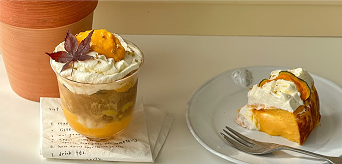

Back to Recipe Book

南瓜巴斯克 (Pumpkin Basque Cheesecake)
材料
- 南瓜 250g（蒸熟前）
- 奶酪 250g
- 细砂糖 60g（已减糖）
- 玉米淀粉 15g
- 奶油 150g
- 鸡蛋 200g
制作步骤
- 所有的材料都要是常温的状态
- 提前软化的奶油奶酪 加入细砂糖和淀粉 按压至顺滑
- 加入放凉的南瓜 用蛋抽拌匀
- 4个鸡蛋要分多起加入 每次都要拌至完全吸收
- 最后加入淡奶油 轻柔混合
- 办好的面糊过筛会更加细腻。倒进模具，烤箱提前预热 230C 烘烤22分钟
- 烤完不要脱模 直接放凉 然后冰箱冷藏过夜